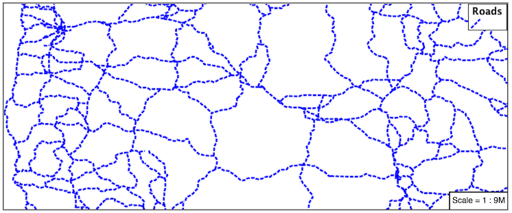
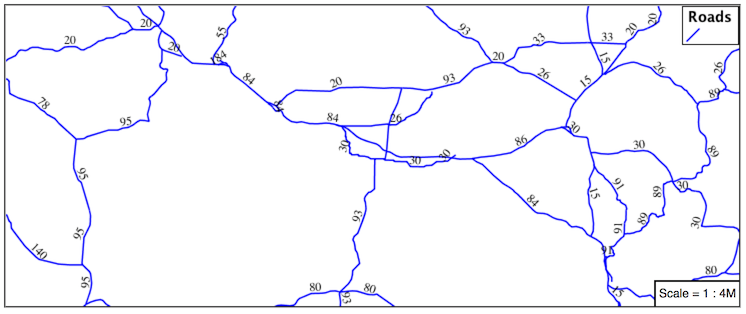
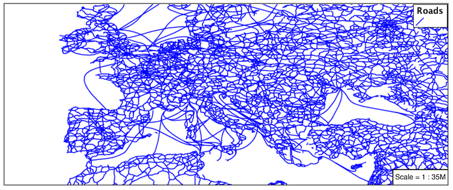

5.2. Lines¶
We will start our tour of MBStyle styling by looking at the representation of lines.
LineString Geometry¶
Review of line symbology:
Lines can be used to represent either abstract concepts with length but not width such as networks and boundaries, or long thin features with a didth that is too smallt o represent on the map. This means that the visual width of line symbols do not normally change depending on scale.
Lines are recorded as LineStrings or Curves depending on the geometry model used.
SLD uses a LineSymbolizer to record how the shape of a line is drawn. The primary characteristic documented is the Stroke used to draw each segment between vertices.
Labeling of line work is anchored to the mid-point of the line. GeoServer provides a vendor option to allow label rotation aligned with line segments.
For our exercises we are going to be using simple MBStyle documents, often consisting of a single layer, in order to focus on the properties used for line symbology.
Each exercise makes use of the ne:roads layer.
Reference:
LineString (User Manual | SLD Reference )
5.2.1. Line¶
A line layer is represented by the line type.
Basic Stroke Properties¶
Navigate to the Styles page.
Click Add a new style and choose the following:
New style name:
line_example
Workspace for new layer:
Leave blank
Format:
MBStyle
Fill in the style editor
{ "version": 8, "name": "line_example", "layers": [ { "id": "line_example", "source-layer": "ne:roads", "type": "line", } ] }
Click Apply
Click Layer Preview to see your new style applied to a layer.
You can use this tab to follow along as the style is edited, it will refresh each time Apply is pressed.
You can see the equivalent SLD by requesting http://localhost:8080/geoserver/rest/styles/line_example.sld?pretty=true which will currently show the default line symbolizer we created.
<?xml version="1.0" encoding="UTF-8"?><sld:StyledLayerDescriptor xmlns="http://www.opengis.net/sld" xmlns:sld="http://www.opengis.net/sld" xmlns:gml="http://www.opengis.net/gml" xmlns:ogc="http://www.opengis.net/ogc" version="1.0.0"> <sld:NamedLayer> <sld:Name>line_example</sld:Name> <sld:UserStyle> <sld:Name>line_example</sld:Name> <sld:FeatureTypeStyle> <sld:Name>name</sld:Name> <sld:Rule> <sld:LineSymbolizer/> </sld:Rule> </sld:FeatureTypeStyle> </sld:UserStyle> </sld:NamedLayer> </sld:StyledLayerDescriptor>
We only specified the line layer, so all of the boilerplate arround was generated for us.
Additional properties cane be used fine-tune appearance. Use line-color to specify the colour and width of the line.
{ "paint": { "line-color": "blue" } }
line-width lets us make the line wider
{ "paint": { "line-color": "blue", "line-width": 2 } }
line-dasharray applies a dot dash pattern.
{ "paint": { "line-color": "blue", "line-width": 2, "line-dasharray": [5, 2] } }
Check the Map tab to preview the result.

5.2.2. Multiple Layers¶
Providing two strokes is often used to provide a contrasting edge (called casing) to thick lines. This can be created using two layers.

Start by filling in a bit of boilerplate that we’ll be using
{ "version": 8, "name": "line_example", "layers": [ { "id": "line_example", "source-layer": "ne:roads", "type": "line", "paint": { "line-color": "#8080E6", "line-width": 3, } } ] }
Add a second layer to the rule
{ "version": 8, "name": "line_example", "layers": [ { "id": "line_casing", "source-layer": "ne:roads", "type": "line", "paint": { "line-color": "black", "line-width": 5, } }, { "id": "line_center", "source-layer": "ne:roads", "type": "line", "paint": { "line-color": "#8080E6", "line-width": 3, } } ] }
The wider black line is first so it is drawn first, then the thinner blue line drawn second and so over top of the black line. This is called the painter’s algorithm.

5.2.3. Label¶
Our next example is significant as it introduces how text labels are generated.

Use of Label Property¶
This is also our first example making use of a dynamic style (where a value comes from an attribute from your data).
To enable LineString labeling we add a symbol layer with a text-field.
Update
line_examplewith the following:{ "version": 8, "name": "line_example", "layers": [ { "id": "line", "source-layer": "ne:roads", "type": "line", "paint": { "line-color": "blue", "line-width": 1, } }, { "id": "label", "source-layer": "ne:roads", "type": "symbol", "layout": { "text-field": "{name}" } } ] }
The SLD standard documents the default label position for each kind of Geometry. For LineStrings the initial label is positioned on the midway point of the line.

We have used a feature property calculate a value for the label. The label is generated dynamically from the name attribute. Feature properties are supplied within curly braces, and must match the name of a property of the feature type.
{ "version": 8, "name": "line_example", "layers": [ { "id": "line", "source-layer": "ne:roads", "type": "line", "paint": { "line-color": "blue", "line-width": 1, } }, { "id": "label", "source-layer": "ne:roads", "type": "symbol", "layout": { "text-field": "{name}" } } ] }
Additional keys can be supplied to fine-tune label presentation:
{ "version": 8, "name": "line_example", "layers": [ { "id": "line", "source-layer": "ne:roads", "type": "line", "paint": { "line-color": "blue", "line-width": 1, } }, { "id": "label", "source-layer": "ne:roads", "type": "symbol", "layout": { "text-field": "{name}", "symbol-placement": "line", "text-offset": [0, -8] } "paint": { "text-color": "black" } } ] }
The text-color property is set to black to provide the colour of the text. Notice how this is a paint property, unlike all the others which are layout properties.
{ "version": 8, "name": "line_example", "layers": [ { "id": "line", "source-layer": "ne:roads", "type": "line", "paint": { "line-color": "blue", "line-width": 1, } }, { "id": "label", "source-layer": "ne:roads", "type": "symbol", "layout": { "text-field": "{name}", "symbol-placement": "line", "text-offset": [0, -8] } "paint": { "text-color": "black" } } ] }
The symbol-placement property is used to set how the label is placed with respect to the line. By default it is point which casues the label to be placed next to the midpoint as it would be for a point feature. When set to line it is placed along the line instead. text-offset specifies how far from the anchor the label should be placed, in both the x and y directions.
{ "version": 8, "name": "line_example", "layers": [ { "id": "line", "source-layer": "ne:roads", "type": "line", "paint": { "line-color": "blue", "line-width": 1, } }, { "id": "label", "source-layer": "ne:roads", "type": "symbol", "layout": { "text-field": "{name}", "symbol-placement": "line", "text-offset": [0, -8] } "paint": { "text-color": "black" } } ] }

5.2.4. How Labeling Works¶
The rendering engine collects all the generated labels during the rendering of each layer. Then, during labeling, the engine sorts through the labels performing collision avoidance (to prevent labels overlapping). Finally the rendering engine draws the labels on top of the map. Even with collision avoidance you can spot areas where labels are so closely spaced that the result is hard to read.
The parameter text-padding provides additional space around our label for use in collision avoidance.
{ "version": 8, "name": "line_example", "layers": [ { "id": "line", "source-layer": "ne:roads", "type": "line", "paint": { "line-color": "blue", "line-width": 1, } }, { "id": "label", "source-layer": "ne:roads", "type": "symbol", "layout": { "text-field": "{name}", "symbol-placement": "line", "text-offset": [0, -8], "text-padding": "10" } "paint": { "text-color": "black" } } ] }
Each label is now separated from its neighbor, improving legibility.

5.2.5. Zoom¶
This section explores the use of rules with filters and zoom restrictions.
Replace the line_example MBStyle definition with:
{ "version": 8, "name": "line_example", "layers": [ { "id": "line_example", "source-layer": "ne:roads", "type": "line", "filter": ["<", "scalerank", 4], "paint": { "line-color": "black", "line-width": 1 } } ] }
And use the Map tab to preview the result.
The scalerank attribute is provided by the Natural Earth dataset to allow control of the level of detail based on scale. Our filter short-listed all content with scalerank 4 or lower, providing a nice quick preview when we are zoomed out.
In addition to testing feature attributes, selectors can also be used to check the state of the rendering engine.
Replace your MBStyle with the following:
{ "version": 8, "name": "line_example", "layers": [ { "id": "line_black", "source-layer": "ne:roads", "type": "line", "maxzoom": 3, "paint": { "line-color": "black", "line-width": 1 } }, { "id": "line_blue", "source-layer": "ne:roads", "type": "line", "minzoom": 3, "paint": { "line-color": "blue", "line-width": 1 } } ] }
As you adjust the scale in the Map preview (using the mouse scroll wheel) the color will change between black and blue. You can read the current scale in the bottom right corner, and the legend will change to reflect the current style.
Putting these two ideas together allows control of level detail based on scale:
{ "version": 8, "name": "line_example", "layers": [ { "id": "line_else", "source-layer": "ne:roads", "type": "line", "filter": [">", "scalerank", 7], "minzoom": 7, "paint": { "line-color": "#888888", "line-width": 1 } }, { "id": "line_7", "source-layer": "ne:roads", "type": "line", "filter": ["==", "scalerank", 7], "minzoom": 6, "paint": { "line-color": "#777777", "line-width": 1 } }, { "id": "line_6", "source-layer": "ne:roads", "type": "line", "filter": ["==", "scalerank", 6], "minzoom": 5, "paint": { "line-color": "#444444", "line-width": 1 } }, { "id": "line_5_1", "source-layer": "ne:roads", "type": "line", "filter": ["==", "scalerank", 5], "minzoom": 4, "maxzoom": 7 "paint": { "line-color": "#000055", "line-width": 1 } }, { "id": "line_5_2", "source-layer": "ne:roads", "type": "line", "filter": ["==", "scalerank", 5], "minzoom": 7, "paint": { "line-color": "#000055", "line-width": 2 } }, { "id": "line_5_1", "source-layer": "ne:roads", "type": "line", "filter": ["<=", "scalerank", 4], "maxzoom": 5, "paint": { "line-color": "black", "line-width": 1 } }, { "id": "line_5_2", "source-layer": "ne:roads", "type": "line", "filter": ["<=", "scalerank", 4], "minzoom": 5, "maxzoom": 7 "paint": { "line-color": "black", "line-width": 2 } }, { "id": "line_5_4", "source-layer": "ne:roads", "type": "line", "filter": ["<=", "scalerank", 4], "minzoom": 7, "paint": { "line-color": "black", "line-width": 4 } } ] }
When a rule has both a filter and a scale, it will trigger when both are true.

5.2.6. Bonus¶
Finished early? Here are some opportunities to explore what we have learned, and extra challenges requiring creativity and research.
In a classroom setting please divide the challenges between teams (this allows us to work through all the material in the time available).
5.2.6.1. Challenge Classification¶
The roads type attribute provides classification information.
You can Layer Preview to inspect features to determine available values for type.
Challenge: Create a new style adjust road appearance based on type.

Note
The available values are ‘Major Highway’,’Secondary Highway’,’Road’ and ‘Unknown’.
Note
Answer provided at the end of the workbook.
5.2.6.2. Challenge One Rule Classification¶
You can save a lot of typing by doing your classification in an expression using arithmetic or the Recode function
Challenge: Create a new style and classify the roads based on their scale rank using expressions in a single rule instead of multiple rules with filters.
Note
Answer provided at the end of the workbook.
5.2.6.3. Challenge Label Shields¶
The traditional presentation of roads in the US is the use of a shield symbol, with the road number marked on top.
Challenge: Have a look at the documentation for putting a graphic on a text symbolizer in SLD and reproduce this technique in MBStyle.

Note
Answer provided at the end of the workbook.